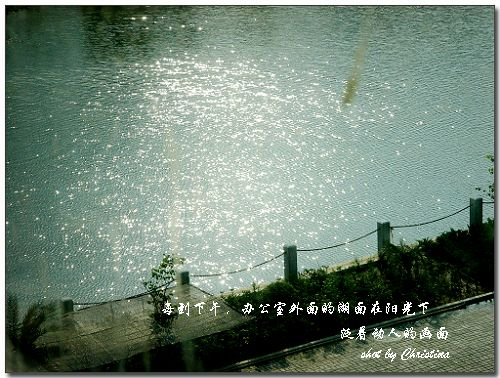
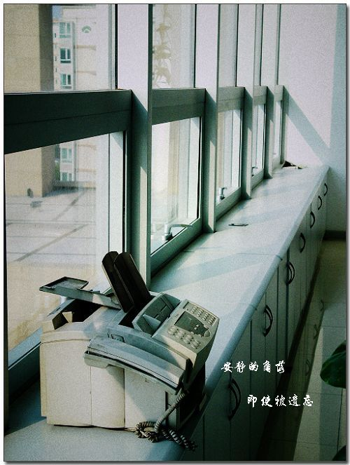
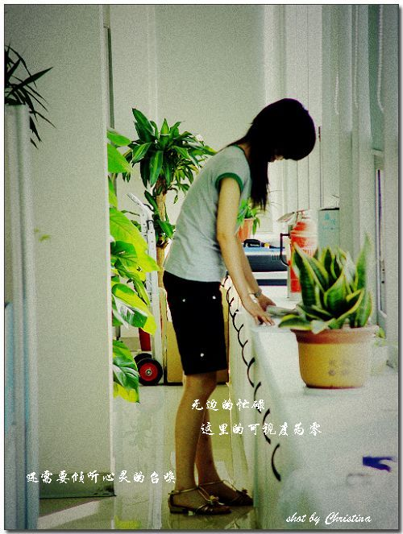
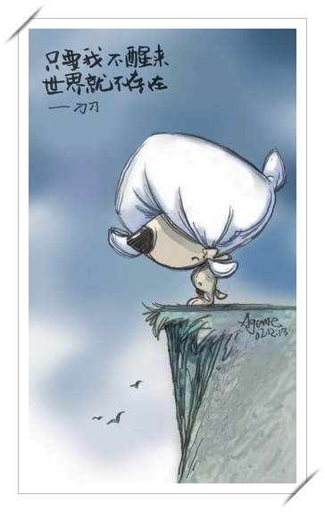
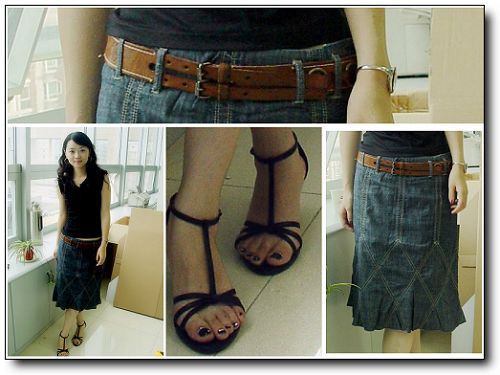
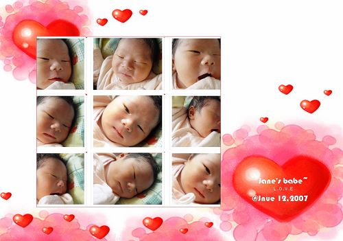

Archives : 2007-06
无常下午 @ Jun 29, 2007



退税降低 @ Jun 29, 2007
国内政策多变，又一次。很突然的出口退税降低，我们这类产品降了8%，据说服装降2%，钢材和木材出口为零退税，说明国家不再鼓励原材料出口了。大企业在6月初得到非官方消息，6月下旬得到正式通知，可有人说到目前为止有的中小外资企业还不知道的，可能吗？都赶着在7月1日前出运，生意人“利”字当头，诺大的国家，可不能乱了方寸咯。可订舱艰难，集装箱车进港区也艰难，排起长龙的队伍，据说有的货车等了两天都没能排进港区~开航的集装箱货轮上堆积了过多的货物，可怕的倾斜！政策的变化直接影响投资方的判断和决策。
儿科医生和猫 @ Jun 28, 2007
义务送猫，惊恐的小猫居然NN弄的我两只手上都有，没想到小猫的尿那么那么...回来洗了好几遍手，好象还是有点味道。路上这只小花猫透过透明的包装盒一直目不转睛盯着我，可爱而可恶。
领养的儿科医生，看不出国内生活久了的那种浮躁，优雅的中青年人不多见，尤其是干净的皮肤，国内污染那么重很难幸免不被污染。我们公司在美国长驻多年的人回来，肤色均匀，极少看到什么明显的斑点，脸上透着安详。除了空气是否还有饮食原因？为什么会有儿科？给大人看病和给儿童看病都是给人看病，不是吗？路上困惑的问题。
无题 @ Jun 27, 2007
当我们无可奈何的老去，有人担忧有人无奈。
谁分享了我们最好的年华？

ＹＣ说：除了工作，就是上课，逛街，和家人聚聚，和朋友聚聚，感觉有点空。这样很空虚，整天在买东西，真的很无聊。我也喜欢买衣服，感觉好看的东西是可遇不可求的，好像以后再也买不到了似的。
Ｃ说:以前我也这样，下班就去逛街，不停的买衣服买服饰，越这么做越空虚。现在只会突击性的买些衣服。你倒提醒了我，我现在没有空虚感了，我在想为什么？
Ｄ说：失恋的人容易病急乱投医，有个刚失恋的家伙昨天跟我说要结婚了，FT...很多人都是这样，以为可以摆脱寂寞，到头来更加寂寞。

Ａ说：主动加你的100个里估计就2~3个正派的人，我之前不是有写过我在yahoo里贴照片交友的，一天有一百多个留言要认识的。前段时间ＨＩ５上一个中国人一定要我ＭＳＮ我就给了，因为那人看上去很斯文的样子，４０多岁，聊过一次我就不想聊，是华侨国外的。后来一次他邀请我看视频，我靠！竟然在放Ａ片，妈的！！！我气死了，马上阻止删除，以后不认识的统统都不加在ＭＳＮ里，都不是好东西。
Ｂ说：以前我用SKYPE，有个话框跳出来上面居然一大生殖器，我当时不在座位上，回来才看到，怀疑别人是不是都看见了，我靠，只有老外才做的出来。
Ｃ说：今天有个家伙说我看上去性欲很强，我就说他看上去象个“鸭子”~~
Ｄ说：靠~都什么鸟啊？哪儿来那么多贱人？
Ｅ说：烂鸟。
Ｆ说：这次出差我一当警察的同学跟我讲了很多事情，好些外表文质彬彬、道貌岸然的人，私下做的事儿极其自私变态，你想都想不到的。不要以为你自己很复杂，与这个复杂的社会比起来，你还嫩着呢。
Ｇ说：你把我当呆X，我就把你呆X。
Ｈ说：即使和TA没鸟关系的事也要叨叨，就一爱好，今天对你说她，明天对她就会说你，总之是要说的。那张嘴谈电影、谈音乐、谈文学、谈生活...？什么都谈不出来，再不让它叨叨点是非，那不是很不人道么？贱人，总是无处不贱，无人不贱。再说了，ＴＡ自个儿干净吗？
Ｉ说：泼辣的女人等于成功了一半，我尽量不让自己骂人。（是不是等于尽量不让自己成功？：））
Ｊ说：我20岁前也阳光啊，30岁又开始阳光了。 现在我看到感性的男人就怕，和这样的男人在一起特别累。我喜欢简单，简单意味着快乐，即使不是太满意，但快乐就好了。
Ｋ说：那就赶紧分，要不你们两都去看看心理医生吧！
被中国人误传了数千年的七句话ZT @ Jun 26, 2007
在中国崇尚权威的文化氛围中，名人名言占的地位是很重的，很多名家说的话，往往被人民当成指导自己人生观世界观的不二准则，但这些几千年流传下来的名言中，也有一些话被人刻意或无知地曲解，背离了话语者本身的意旨与初衷，迷惑了天下万千受众。影不才，试举数例解析一二，以还世情真相与大众……好了我再文诌诌地说话大家估计要扔鸡蛋，虚荣心也满足了，下面开始举例开讲。
1、以德抱怨．．．
原句：“或曰：‘以德报怨，何如？’子曰：“何以报德？以直报怨，以德报德” --《论语 宪问》
以德抱怨，是我们常听到的一句话了，人们通常理解的“以德抱怨”什么意思呢？就是说：孔老夫子教我们，别人欺负你了，你要忍，被打碎牙齿也要往肚子里吞，别人来欺负你，你反而应该对他更好，要用你的爱心去感化他，用你的胸怀去感动他。这就让人感觉很有点肃然了。想想看，如果我一巴掌呼过去那个被打的人还笑笑说打得好啊，你越打我我就要对你越好……遇到这种情况我也会感动到傻眼，这多好一孩子，多伟大的情操啊……
但事实上，我们根本曲解了孔子的原意，我当初，也万万没想到原来在孔子这句“以德抱怨”的后边还跟着另外一段话，什么话呢？子曰：“以德抱怨，何以报德？以直报怨，以德报德！”看完以后，幡然醒悟，原来我们都被某个断章取义的孔子FANS给玩了一把！当时的真实情况是怎么样的呢？孔子的一个弟子问他说：师傅，别人打我了，我不打他，我反而要对他好，用我的道德和教养羞死他，让他悔悟，好不好？孔子就说了，你以德抱怨，那“何以报德？”别人以德来待你的时候，你才需要以德来回报别人。可是现在别人打了你，你就应该“以直抱怨”，拿起板砖飞他！看！就因为被人故意省略了一句话，刚烈如火的孔老夫子一下就被扭曲成了现在这个温婉的受气包形象。
与西方文化相比，东方文明一向被认为是谦逊坚忍的，同样是被人欺负，西方的带头大哥耶稣在圣经里就叫嚣要：“以眼还眼，以牙还牙。”小弟们！别人瞪了你一眼，你就要瞪回去，别人咬了你一口，你就要咬回来！而东方呢？佛家的精神领袖释迦牟尼说“我不入地狱，谁入地狱？”一副逆来顺受的样子。而且他可不是说说而已的，大鹰来欺负他，要吃他的肉，他也真从自己身上一刀刀帮大鹰割下肉来，这就伟大得有点近乎BT了。说完了国外的几位大领导，再回到中国，孔老宗师的这句话为什么会被别人有意地曲解呢？根源还是当时封建统治者的需要，他们的心思，无外乎就是要信仰孔子的万千民众成为“以德抱怨”的顺民，只有“以德抱怨”的民众，才会老老实实地服从他们的剥削和压迫。我们再来看看影响吧，孔老先生这句被曲解了的“以德抱怨”，在中国文化史上起的压迫作用，可真是大到了天上。皇帝残暴，我们要“以德抱怨”，地主剥削，我们要“以德抱怨”，八国联军都打到北京了，还是要“以德抱怨”，要卑躬屈膝，要割地称臣，要想尽一切办法彰现自己的“德”，要“量中华之物力，结大国之欢心”……就是没想过反抗。试想，如果中国的文化里，没有这种把正确的思想东篡西改来为封建统治阶级服务的恶习，如果孔子这句原话没有被刻意地曲解成这样子，我们中国人会养成这样一种懦弱的思维惯性吗？有人说西方人的骨子里本性是狼性，而东方人的骨子里的本性是羊性，这里如月影倒想问问了，是什么原因让我们变成了这样？如果我们从古以来信奉的是西方那种“以眼还眼，以牙还牙”的训诫，近代史上的中国，会给世界留下那么一个任人鱼肉的印象吗？
以德抱怨。
原句：以德抱怨，何以报德？以直报怨，以德报德。
歪曲程度：8
反面影响：9
2、民可使由之，不可使知之．．．
原句：。“子曰：兴于诗，立于礼，成于乐。子曰：民可使由之，不可使知之。”--《论语·秦伯》
又是孔老先生的话，小小景仰一下下先。
民可使由之，不可使知之，这句话什么意思呢？是说，国家统治人民，指使驱赶他们去做事就行了，不要让他们明白他们在做什么。这句话在现在看来，绝对很明显就是封建统治阶级几千年来一直在玩弄的愚民权术，小老百姓嘛，让他们知道那么多干什么？最好都是昏昏噩噩，只知道照着我们的意思去庸庸碌碌一辈子，这句训诫不可谓不恶毒，它被千百年来中国的大小封建统治者奉为至宝，抹杀了多少真理与人民的创造性，但同时，我们的问题就来了，这样的一条愚民之术，真是孔子这位致力于教化人民的教育家的本意吗？
我们知道，在春秋时代的文章是没有标点符号的，后人要研读那时侯的文章，便要再经过一个“句断”的过程，即是根据上下文意思自己在句子的适当地方加上标点和停顿，这样才能得出一句句意通顺而连贯的话。在这里插一句，孔子的文章为什么被后人引用得非常多呢？这其一当然是孔子本身的名望使然，其二，则是因为他的语录涵盖的范围非常广，几乎包括了社会生活的方方面面，这样一来，后来的人无论是谁，抱着什么目的，都可以从孔子的话中断章取义地引用其中的相关部分，再加以自己个人倾向的理解和句断，用来证明自己的观点。比方说现在这句“民可使由之不可使知之”，从前文来看，我们孔老先生前边一直在讨论诗礼乐这三种东东的教育问题，可怎么后边一下子就变成去教帝王权术的训诫了呢？原来，这又是后人别有用心地断章取义，刻意在句子的中间用一个不恰当的“句断”使这句话产生了歧义的缘故。我们结合上下文的语境，很容易就能得出这句话正确的分句方法：“子曰：兴于诗，立于礼，成于乐。民可，使由之，不可，使知之。”孔子的整句话就是说，诗、礼、乐这三样东西是教育民众的基础，一定要抓好，如果人民掌握了诗礼乐，好，让他们自由发挥，如果人民还玩不来这些东东，我们就要去教化他们，让他们知道和明白这些东西。”你看，这才是“有教无类”的大教育家孔老先生的本意嘛。好好的一句话，硬是被那些别有用心的混蛋生生地坳成了孔子要愚弄人民，要阻挠人民知书答理寻求知识的愚民之术。真不知道那些曲解这话的SB怎么想的，你要说这种P话是教育家孔子说出来的，谁信啊？都把人民当白痴来忽悠了？
有人说古时候的中国人民是不幸的，即便是在物质丰富的盛世，他们的精神世界也贫乏得可怜，到了中近代，西方的思想领域渐渐迎来了文艺复兴，迎来了民主共和，迎来了一个又一个推动世界的发明进步与思想启蒙，而聪明的中华民族呢？在更早的时候他们就有了伟大的四大发明，走在了世界的前边，可为什么就是这么好的基础，到了近代我们反而远远于西方这些小字辈的民族？民可使由之，不可使知之，多恶毒的训诫啊！它象一条张开血盆大口的大蛇，狠狠地缠在中华民族的身上，泯灭了多少先进的思维火花，束缚了多少应有所作为的苗子。但反过来看看，故意曲解这句话的封建统治者固然可恨，但我们能完全把责任都推到他们身上吗？这本身就是多么可笑的一件事情，我们怎么就没想想，一个伟大的教育家，一个用一生置身于教化天下民众的孔子，又怎么会说出“民不可使知之”的蠢话来？更可笑的是，这句话我们竟然就这样相信了几千年膜拜了几千年，这最后该伤心的，是孔老先生呢？还是我们呢？
民可使由之，不可使知之
原句：“子曰：兴于诗，立于礼，成于乐。民可，使由之；不可，使知之。”
歪曲程度：7
反面影响：9
3、无毒不丈夫．．．
原句：量小非君子，无度不丈夫。--民间谚语联对
量小非君子，无毒不丈夫，这句话绝对是中国众多以讹传讹的话中最搞笑的一个例子之一，就算是刚完成九年义务教育的初中生，也能轻易看出这其中的不妥之处，首先，这无毒不丈夫，就跟我们认识的古人崇尚的价值观念大大背离了，大丈夫，自然是说那些坦坦荡荡胸怀宽广的男人，什么时候恶毒阴损，暗箭伤人这种前缀也能放在前边来形容大丈夫了？
原来，这句来自民间的谚语本来应该是“量小非君子，无度不丈夫”，这本来是个很好的句子，里边充分运用了对仗。显示出了一份阳刚有力的气魄，一个胸怀坦荡的男人形象就跃然于纸上，可惜劳动人民口耳相传的这一句话，到了朝廷上那些所谓的学高八斗的“君子”嘴里就变了个味。为什么呢？这要从古时候文人的习性说起，在这副对联式的谚语里，“度”为仄声字，犯了孤平，念着别扭，很容易读为平声字“毒”，那些对音律美感要求甚高的学者们某天吃饱了没事儿干，便发挥他们的专长自做主张，把这句改为“无毒不丈夫”了，于是这句话，终于成了典型的“信言不美，美言不信”的例句，成了迂腐文人的笔下的又一个牺牲品，“量小非君子，无度不丈夫”，原话里一个君子对一个丈夫，一个度对另一个量，本来是很完美的一个句子，可经过上千年的以讹传讹，竟成了“无毒不丈夫”这句现在我们挂在嘴边的口头禅。
这句话的整个演变过程，我宁可相信是无意的，否则也太缺德了，这不故意往咱男人身上抹黑么？但就是这无意的一个讹传，却也给我们带来了些说大不大，说小不小的影响，我们都知道心理学上有个说法叫先入为主，潜移默化。无毒不丈夫，我们天天在耳濡目染这个被篡改了的男人形象之际，心里的价值观人生观，难免也会受到些不良影响，天天看着电视里奸人怂恿主角干坏事的时候都用这句：“干吧！无毒不丈夫！”然后主角想想也对，于是五指并拢手掌上举，狠狠地做一个切的动作：“无毒不丈夫，干！”你能说同样作为一个男人，这东西看久了你的思维能不收到一丁点儿的影响么？关于这种语言的影响力量，我再举个例子，比如隔壁顶撞了我一下，这时候我朋友张三来了：用的是原版的好话劝我：“老话说，量小非君子，无度不丈夫，大如啊你是个男人，就别跟他一般计较了。”张三这样说，我这个大丈夫当然再拉不下面子去计较这种小事，可如果另一种情况，张三来和我这么说：“这老话怎么说的？无毒不丈夫！大如，你是男人，不能怂啊！给你刀，去做了他！” 看看，我听到他这话，除了接过刀速度冲出去乱砍以证明自己是个男人之外，还真没什么好办法，你说对不对？
无毒不丈夫
原句：量小非君子，无度不丈夫。
歪曲程度：9
反面影响：5
4、唯女子与小人难养也．．．
原句：唯女子与小人难养也，近之则不孙，远之则怨。--《论语·阳货》
现今女权主义抬头，孔老夫子的这一句话便立时变成了女权精英批判者们群起而攻之的绝好靶子，看看，这就是你们中国男人歧视咱女性的最初起源，孔夫子这老混蛋啊！害我们女性被压迫了几千年啊几千年，好不容易翻身做主人哪，我们要顶上半边天再抢他们的半边~~天！一时间，群情激愤，凶狠异常，热闹非凡。但各位姐姐们阿姨们姑奶奶们，且听如月影说两句话，你们把这罪过都推到孔老人家身上，却是大大地冤枉了他了。
先根据当年老孔的处境，提出一个疑问：“孔老先生当时，为什么要说出“唯女子与小人难养也”这样的话？任何人说话都不会是无缘无故的，当然，除了疯子，而我们的孔老先生应该不是疯子吧？而且这位孔老先生受《诗经》的影响很深，他说：“诗三百，一言以蔽之，思无邪”，他认为《诗经》是一部伟大的著作，而我们再来看看这部孔子都很推崇的巨著，里边倒有很大一部分歌颂了女子的活泼美丽，大方善良，歌颂了当时男女平等的浪漫爱情氛围，事实也是这样，在春秋时代，男女间是相当平等的，而孔夫子本人更是曾反复多次以诗经里的“妻子好合，如鼓瑟琴”来表达了自己对婚姻和女子的平等看待观点。所以，说孔子歧视妇女，不仅和孔子的思想不符，更与当时的民间社会整个大环境对不上号，因此这个说法，实在是大大地有待商榷。
所以我们就要看看，孔子当初是在什么一种环境下说出“唯女子与小人难养也”这句话的？这话又是对谁说的？他一宗师级别的身份，不可能在路边想着想着突然心情烦躁就开骂一八杆子打不着的妇女同志吧？在《史记·孔子世家》里，提到了孔子之前的卫国之行，孔子“居卫月余，灵公与夫人同车，宦者雍渠参乘出，使孔子为次乘，招摇市过之。孔子曰：‘吾未见好德如好色者也。’于是丑之，去卫。”我来大致翻译一下这段话，当代全国教育劳模孔老先生受卫国国君的邀请，来到了卫国参观学习休养，但在这期间，孔老先生突然发现自己被涮了，人家根本是拿他的身份来炫耀自己抬高自己而已，并不是真正支持他来这教化卫国民众的，尤其是那个卫灵公的老婆，为了抬高自己的身望，公开炫耀，贬低了孔子，孔老先生那个郁闷啊，你卫灵公到底是喜欢德才多些，还是喜欢女色多些？在你心里我和你老婆哪个重要？干醋自己吃完，依然没人鸟他，孔子怒了，说：“吾未见好德如好色者也！丢！此处不留爷，自有留爷处！GO，GO，GO！”收拾行李就离开了卫国，离开之后，心情平复了，想起卫国公老婆那种仗着得宠，骄横跋扈乱政扰民的烂事儿，就发了感慨：“唯女子与小人难养也！近之则不孙，远之则怨。”
你看，知道了这些历史背景和人生经历，孔子这话就很好理解了。我们知道，他骂的人是那种“被养”的女人和小人，女子还好说，可想想什么人才能养小人？君主啊！再看看孔子的卫国之行，一切都明白了，他这话断不是发神经突然开骂起包括自己老妈在内的所有女人，而是有一个特指的对象，这个对象，就是卫灵公那位老婆南子，就是那些“近之则不孙，远之则怨”的宫廷女权，近之则不孙，远之则怨，这后一句话怎么解释呢？就是说你作为一个君主，对那些后宫的女人和没什么本事的拍马小人太亲近了，她们就会得意忘形，忘了自己的身份，开始用你的权力胡做非为，而你疏远她们吧，她们又要埋怨，总之是非常麻烦。此前没见过什么宫廷里女人之间的斗争的孔子说出这话是可以理解的，他的担心也不是没有道理，孔子之前，妲己误国，烽火戏诸侯，这些事例还少吗？孔子之后，宦官小人当道，皇后外戚乱政的桥段更是屡屡上演，不可枚数。所以我们的女性同胞们，你们要清楚，孔子当时没发神经把你们全天下的女人不分青红皂白地乱骂一通，别再憋屈他老人家了~~
最后一个问题，那么是谁误传了这句话，让我们可爱的女性同胞被压迫了几千年之久呢？俗话说冤有头，债有主，如月影要帮孔老夫子平反，自然也要再帮你们找到一个真正的罪魁祸首，让你们发泄出那几千年积下的怨恨（怎么说着说着象鬼片了-_-!），好了，拉回正题，西汉的时候有一位所谓的“大儒”董仲舒，此人大力主张“夫为妻纲”，就是这个家伙，借孔子的一句话断章取义，给广大的中华妇女头上戴上了千年的枷锁。看看这家伙在《基义》一书里提出的“三纲”：“君臣父子夫妻之义，皆与诸阴阳之道。君为阳，臣为阴；父为阳，子为阴；夫为阳，妻为阴。王道之三纲，可求于天。”他这东西就是一为讨好历任统治者的马屁之作。 “君为臣纲”，为历代皇帝所接受，渐渐形成了封建统治的一套准则，而“夫为妻纲”，则为历代男人所推崇。这“纲”是什么意思？君为臣纲，则君要臣死，臣不得不死！知道这个“纲”的厉害了吧？你想想，各位苦命的女子没嫁人前都一可人的窈窕淑女，本来身份平等，嫁了人，就得时刻提心吊胆地按着老公的这个“纲” 过日子，这三纲五常，束缚了中国多少年，害了多少代人啊！
唯女子与小人难养也。
原句：唯女子与小人难养也，近之则不孙，远之则怨。
歪曲程度：6
反面影响：9
5、吾生也有涯，而知也无涯．．．
原句：吾生也有涯，而知也无涯，以有涯随无涯，殆已 --《庄子·养生主》
这句话是庄子说的，八卦一下，庄子此人，实在是如月影非常喜欢的一个人物，他的思想和性情，都非常十分很特别对我胃口，什么大家不爱听这些？那算了，本来想抖点猛料让大家深入了解一下我这个好同志的……好了好了别扔鸡蛋，我说正事还不行吗？好，先来看看，“吾生也有涯，而知也无涯”，这句话我们在什么地方见得最多呢？第一，是图书馆，第二，是全国各个小学的后墙上，按照现在人们的普遍理解，这句话实在是学习励志类的不二明言警句，生也有涯，知也无涯，多崇高的目标啊，这比什么孔老夫子的“学而时习之不亦乐乎”都来得有气势多了，古往今来，不知道多少学子在这句话的激励下凿壁偷光闻鸡起舞奋发图强追求上进读那些永远也读不完的书，动力啊，偶像啊，庄子七老八十还能说出这么振奋人心的话，咱年轻的小辈正当青春，怎么能输给他老人家？不狠狠地读书怎么对得起他老人家？
但真相说出来，往往会让人哭笑不得，庄子的这句话其实是这样说的，“吾生也有涯，而知也无涯，以有涯随无涯，殆已。”我庄子的生命是有限的，但我面对的知识是无限的，要我以本来有限的生命，去追求那种永远看不到边的尽头，你当我是SB吗？这样会搞死自己的捏~~庄子是一个追崇顺其自然，清净无为的洒脱人物，他认为人吃个饭，饱了就行，没什么必要追求奢华，穿个衣，别冻着就行，实在不需与什么人攀比。同样，学问也是如此，学够了就行，学以致用，学问学来就是为了用，你一个人再牛B，还能全部用到这世间所有的学问？既然不能用到，那你老学老学把自己整个生命都拿来学这是干啥呢？时间都被你拿来学习了，还怎么有时间把学到的东西拿来用呢？这不就跟吃饭是为了炫耀穿衣是为了攀比的人一样，完全本末倒置了吗？所以他老人家就在《养生主》一书中给后世陷入这个怪圈的书呆子们提了个醒，你们这样苦学盲学乱学通学，对身体不好滴，会搞死自己滴~~
当然，庄子的这句被人误解的话，其实并没有以上那些例子引起的反面作用那么大，读书是必须的，掌握一定的知识也是必须的，但咱们要记得自己把握好，有个度。你就算用半辈子武装得自己学富五车，却发现很多知识你根本用不上，这不浪费了么？庄子从来都不认为一个人能比自然更大，这是他所有的话中唯一的主题思想，实际上，就算我们拿现在的世界观来衡量一部《庄子》，仍能发现他的学说里，有许多是符合辨证唯物主义思想的。可叹的是，就是这么一位崇尚自然的思想家，他一句劝解读书人适可而止循序渐进的话却被一些叫嚷着“人定胜天”的人当成了激励年轻人拼命读书的名言来供着，科举改成了高考，八股改成了应试教育，于是大学生一年比一年多，可素质却一年比一年低下，最后整黄了吧？你看现在大学文凭都和废纸没什么两样了，这帮人还不醒悟，还是继续读，读完大学读硕士，读完硕士读博士，读完博士读博士后……读完出来一看，嘿，好象我已经老了捏，很多知识也用不着捏，这不自己跟自己过不去么？最后再说一句私人的牢骚话，最近我去图书馆，总看见一帮老头老太太天天在那侯着，一见有啥免费的学习班就往里钻，也根本不管别人老师是教着什么，各位老爷爷老奶奶们，听我这个后辈说句话，您们这不瞎捣蛋么？赶时髦啊？摆个性哪？想让我们称赞下您啊？还是真打算活到老学到老啊？自个儿细细思量一下有什么意义么？能不能腾些地方给些真正需要的人进去？M的连“量子力学基础浅谈”都有街道的老大妈在里边占着位置，我真是无语了……
吾生也有涯，而知也无涯。
原句：吾生也有涯，而知也无涯，以有涯随无涯，殆已
歪曲程度：8
反面影响：3
6、相濡以沫．．．
原句：相濡以沫，不如相忘于江湖--《庄子·大宗师》
说点轻松点的吧。
沿着伟大的思想家庄老爷子的足迹，我们再来看看另外一条咱们耳熟能详的名句：“相濡以沫”。
说起这句话，其实大有来头，我想大家都听过现在流行的一个词吧？江湖，这个“江湖”是从哪儿出来的呢？很多人以为最初是古龙小说里的一句“人在江湖，身不由己”，其实不然，江湖这个词最早的出处，便是在庄子说“相濡以沫”的这句话中。在《大宗师》篇中，庄子给我们讲了这么一个小故事：“泉涸，鱼相与处于陆，相呴以湿，相濡以沫，不如相忘于江湖。”他说的是有一天，一眼泉水干了，两条小鱼被困在了一个小水洼，为了生存下去，它们彼此从嘴中吐出泡泡，用自己的湿气来湿润对方的身体，互相扶持，互相依赖。但，与其在死亡边缘才这样互相扶持，还不如大家找到一条水路，开开心心地回到广阔的江河湖海，回到各自的天地，彼此相忘，自由自在。
我们口口声声说的“江湖”就是这么来的，没想到吧？做下小广告哈，欢迎观看点评在下拙作：小说《书江湖》，不是什么特别牛B的书，主角比佐罗牛B一点而已，现正联系出版或许不日上市，先搜索来看一下也可以~~
恩，恩，回来，相濡以沫，多美的情景，虽然这并不是爱情最理想的状态。当年街道居委会的老大妈就算再没文化，这句话肯定是会说的，在我们的父辈那个婚姻靠组织介绍的年代，这句话支撑了多少性格各异，却本没有多少感情基础的夫妻一直走到了今天，相濡以沫，多好的一个榜样啊，只是当年没曾想，只是当年不知道，既然需要相濡以沫才能支撑，为什么却不干脆洒脱地放手，把自己，也把对方放开去找各自的幸福，去找各自的江湖呢？
相濡以沫，这句话的全部意思，又有多少人知道呢？
我有个大学的同学，是个陕西的女孩子，她在上学时找了个陕西的男朋友，她把自己的一切都给了他，当然包括了身体，可是那个懒惰的男朋友对她很不好，常打她骂她象佣人一样地指使她，却又根本离不开她，我们惊奇的是，她竟然一直默默忍受了下来，一忍就是四年，我们忍不住问她，你们过得这么辛苦这么难受，为什么还要在一起呢？她却这样回答：“嫁鸡随鸡，嫁狗随狗，虽然在一起不是很快乐，但这不就是相濡以沫吗？”
我无言，这能算是相濡以沫吗？为什么明明外边有更大的江湖，更宽广的天地，为什么明明知道知道自己有更好的未来，却要把双方都绑在一起，不开心地继续过下去呢？我们都身处一个传统思维占据非常强势地位的社会，一句相濡以沫，不知道让多少爱情做了这种传统思维的牺牲品。其实想一想，如果自己都不开心，别人的称赞又能怎么样？如果自己能找到属于自己的真正天地，别人的指责又能怎么样？唉，说大了，有点没边没际，父母也教育过我劝合不劝分的道理，这话题也到此为止吧，劝合不劝分，相濡以沫啊，原来我也不能免俗。
只是叹息一声，我们都没曾想到，除了一句相濡以沫，原来后边，还可以相忘于江湖。
相濡以沫
原句：相濡以沫，不如相忘于江湖
歪曲程度：--
反面影响：--
7：天地不仁，以万物为刍狗．．．
原句：天地不仁，以万物为刍狗，圣人不仁，以百姓为刍狗--《道德经》
要说起这句话，大半的愤青都会告诉你，这话的意思是说：“天地残暴不仁，把万物都当成低贱的猪狗来看待，而那些高高在上的所谓圣人们也没两样，还不是把我们老百姓也当成猪狗不如的东西！”标准的无政府主义宣言，标准的对社会不满。这句话在各种愤青的文章中，在当前下三流的网络YY小说里那是随处可见，主角通常是弱小无助，饱受压迫和不公，于是有一天突然醒悟，大喊一声“天地不仁，以万物为刍狗！”立时或悟道飞升，或肉身成佛，或从一个人人可以欺负的小瘪三变成一方霸主，等等等等，不一而足……
基本上，这些孩子的思维都可以总结为一种抑郁太久的被压迫感大爆发，就好象连老天都欠了他们个十万八万似的。可是呢？另一方面这帮无政府主义的家伙又没胆子喊出什么“王侯将相宁有种乎”之类更牛B的话，更不敢扯出个大旗子大叫“苍天已死黄天当立！”最后，只好喊一喊这句“天地不仁，以万物为刍狗”，以表达一种受到不公平待遇的憋屈。说实话，其实我挺同情这些人的，无政府主义没什么了不起，一个人在学生时代没有经历过无政府主义的阶段，基本上可以被认为没有青春，我也经历过那种思想特别冲动觉得这世界上谁都跟自己过不去的时代，不同的是现在我知道了怨天尤人一点用都没有，社会是不公平，社会就是这么吊不公平，如果你觉得社会不公平，你只有自己努力去改变这一切。
但就算我非常理解他们的青春年少，我还是有必要得跟这些后辈们说一句，你们这句话，其实恰好用错了。
天地不仁，以万物为刍狗，这根本不是你们从字面上理解的，说天地残暴不仁，把世间万物都看成猪狗，圣人不仁，以百姓为猪狗，也根本不是你们想的那样说所谓高高在上的统治者们，把百姓看得低微卑贱。其实这句话的真正意思是说，天地不情感用事，对万物一视同仁，圣人不情感用事，对百姓一视同仁。你们推崇的这句话，它的原意中根本没有你们所需要的压迫与歧视，却恰恰相反，它说的是一个公平的道理，我们所有的人，所有的众生在天地的眼中，都是平等的，为什么现在你啃着干面包，别人却吃着海鲜大餐？孩子，在大叫不公平之前，为什么你不想想你是否和他流过一样的汗水？如果想不通，也行，那就别想了，为什么你不尝试通过自己的努力，来稍微扭转一下这样的“不公”？只是大叫着不公平大叫着没天理大叫着等着天上掉个馅饼下来补偿你的委屈你的遗憾你正损失着的一去不复返的青春年华，有用吗？
天地不仁，以万物为刍狗。
这一篇是写给那些迷茫孩子的，如果你理解错了这句话，你会陷入自己的监狱，不能自拔。如果你知道这句话的真正意思，我恭喜你，孩子，这时你才真正长大
《幸福是什么-与陈丹青面对面》之一 @ Jun 25, 2007
他以一个艺术家的敏感，多次谈到他面前的桌子，上面映着绿树，多么的美。言归正传，他实际面对这类群体的提问，我知道最后他似乎已经有些不耐烦了。确实，这些问题在我来说，我过去要骂人的。但是陈很有耐心的在为这些人解释，我觉得有些象心理治疗。^_^，现在摘选如下，有的可能会有偏差，但是这一段是来自于现场录像的文字整理：
一个女生问到人的终极问题，生死意义等等
陈的回答： 现在青年，其实生活很好，但是有个问题，就是他妈的他们老问为什么（终极问题，生或死的意义）。我们小时候人生目标很低，我们就是为生而挣扎，所以没这种终极的问题。现在总有人问我，说自己很茫然。我跟你一样大的时候，跟你比差远了，我看的书很少。我数学不懂的，我甚至除了除法之外都很困难。有学生问我，她的苦恼思考，我跟她说好好读书、赶紧找份好工作、赶紧结婚生孩子，别考虑这些，先解决人生的基本问题。事情在后头，有的是你需要解决的。解决基本问题，要安生。年轻人第一条就是安生，有职业有收入。我们的错误就是立命，我们立了巨大命，要么立了解放全人类，要么就是我要做艺术家，我们那一代的人是理想主义者。我们那一代人混出来的很少，大部分人在年纪大了还在忙安生的问题，很惨。我瞧你衣食无忧的样子，但是我看到真正苦的是那些民工、小姐，他们都在上大学的年纪，他们对人生的感悟比你深，你可以问问他们（这些终极问题）
一个艺术人的双重人格
我有双重人格，即相信为艺术而艺术，也相信为人生而艺术，一部分非常政治化，一部分作品非常个人化。艾未未说过，我们都是人格分裂者。我们经历两种暧昧的政治形态，所谓责任感走的太远时，我们提醒自己艺术不是这样的，但我们在走进艺术是又提醒自己不要忘记一个所谓存在状态。这是一种困扰人格分裂，中国当代很多人都是人格分裂的，在自我与迎合中痛苦挣扎。有时是自我的，有时又是为迎合社会的。
你刚才说你从事商业设计经常面临这种选择，实际也是一种人格分裂。你要好好接订单，但是你不要忘了思考，这样你就是发展的。
社会问题
中国的问题是，没有经过工业社会，现代社会而是直接进入了后现代社会，导致期间的规范、过程、标准都是模糊的，这需要很长时间来完善。
我们现在不要下结论，中国北京现在是古典、现代、后现代、后后现代、卡拉什么都混在在一起，你很难说他是好还是坏你说你很羡慕77-89年间的的大学生活，自由，实际上我在想我们过去没吃没穿，那时可能看来一部电影或是画展回来兴奋讨论，现在想想考虑这些东西都他妈的傻逼。
社会学家从来个摆设，从古到今，即使是国外，也是没有地位的摆设。我们看到，在文革十年中如果说没有受到冲击的只有科学家，而几乎所有的社会学家都受到了或多或少的迫害我最痛恨考试。我觉得考试是对我人格的侮辱。我当时大学考外语，我零分，我在考场站起来说，我是知青，我不懂外语。我就走出去了。当然，后来考试总成绩我是第一名。
关于青春及其他
青春就是野狗，我年轻时就跟野狗一样的。一生气就跑出去了，沿着铁轨走十多公里。不要说青春怎么样，它就是野狗。跟狗一样。
幸福就是减少痛苦或是根本就不知道幸福是什么！
来自MSN SPACE“心静 思远”
品牌？发展？ @ Jun 22, 2007
周五开了一下午会。
在公司未建立品牌之前，在这个行业中挣扎生存了30年。日本有商社，我们有特定时期下的外贸公司，自营进出口权放开后，鉴于我们产品的复杂多样性，必然有服务的“饭”可吃。品牌发展不是办超级女生、不是包装偶像，难道拔苗助长、从建立到现在仅仅5年时间就要和国外百年品牌相比？有关品牌如何发展、如何存在，有些属于理想与现实的矛盾，有些是制度和管理问题，而有的人则一直是急功近利、眼高手低。那些突出的是强在语言和表演上，而不是强在个人能力上。可以把10%放大到80%甚至100%，就好象泡妞，长袖飞舞的maybe满嘴谎言，寡言木纳maybe真情满怀，而往往最显眼的就是抛起长袖的家伙。
夏至 @ Jun 22, 2007
待领养的小猫 @ Jun 21, 2007
好友家一个多月大的五只小猫待字闺中，一只狸花色，两只黄色，两只花猫。小时侯养过一只黄色大猫，很肥很肥的，冬天的晚上我会偷偷把它塞进被窝取暖，深夜醒来看到它的眼睛在黑暗中象两个小灯泡，坐在我的枕头上一动不动的看着我。现在无法想象当时怎么从来没考虑过卫生问题呢？那只长得很肥，喜欢懒洋洋的发出呼噜呼噜的声音。后来我妈认为我对猫咪放了太多精力就把猫咪送走了：（
昨天晚上去朋友家看猫咪，看见生人来几只小猫躲起来了，好容易抓了那只狸花猫和一只黄色的猫，晚上拍出来的照片光线不好，又不能用闪光灯，担心吓着小猫咪，凑合的看吧。养猫咪有个好处，不用象养狗一样每天必须出去遛。猫咪自己很爱干净，经常自己用舌头梳理皮毛，大小便知道在固定的便盆里，聪明的小动物。
好友说如果下周一前没有人领养的话，她爸爸就要给旁边的杂货铺老板了，55555555~~我最喜欢这只小黄猫，象只小老虎，眼睛大大的很可爱。而且抱它的时候它很懂事的把利爪收在肉垫下，可爱极了~有个做皮草出口的朋友说我肯定做不了皮草这行，觉得我对动物有种特殊的感情，而她每年要做几万条狸猫出口，用猫皮做褥子，够残忍。
主人为宠物做计划生育太重要了，这边我在MSN上向人推销猫咪，对方向我推销金毛犬，晕~~一年零四个月,50几斤重。这就是我当年一直不让妞妞生育的原因，生下来的小崽子如何安排是个问题。
一直有个愿望，就是有个大大的院子，可以养花草养狗狗和猫咪，天天与它们相伴，这样的生活对于上班族来说是奢望，基本不可能。所以我想要是能退休就好了。

猫奶奶的女儿，谨慎的猫妈妈，据说生了好几窝了。

看破红尘的猫奶奶，从我去她家到天黑离开，猫奶奶一直守着食盆蹲在窗台上，让人想到孤僻的梅超风躲在阴暗的洞穴里苦练九阴白骨爪的情形*—%#%—……—%生育过一窝小猫后主人给她做了绝育手术，猫奶奶从此性格大变，不问世间情为何物......

推荐一个养猫人的BLOG:my kitten tigger&happy
南京这样的民国建筑越来越少，走进这样的居住区有种久违的感觉，小时候也曾居住过这样的老房子，勾起亲切而温和的回忆。如果拆迁了，原本自由自在生活的家猫以及那些野猫将不再有房顶可以跳跃了。

端午节*牛仔裙 @ Jun 19, 2007
向好友推荐身上这条DKNY牛仔裙，好东西总想与好友分享，推荐她也买一条。店里最小的2号，穿在身上稍微有点大，不过符合我的要求，包得太紧不自在。生活在中国挺幸福吧？可以看到满街的LV、满街的DKNY，有些国内认知度比较低的品牌反而幸免于难了。和好友观点一致，只要好看、喜欢，质量尚可，无所谓品牌不品牌的。


Jane的宝宝 @ Jun 15, 2007
女同事才出生3天的宝宝，男孩子，躺在婴儿床上好迷你的摸样，脑袋也小小的，手被包起来，说是担心指甲划伤他自己的皮肤。分娩后的Jane肤色没以前白，长头发也剪了，看上去很安祥。

《Let go》-Frou Frou @ Jun 11, 2007
“Frou Frou ”这个词出自波德莱尔的一首诗，意指年轻佻丽的女性舞动中裙子发出的声音。当作曲家，作词家，音乐制作人Guy Sigsworth和歌星 Imogen Heap 组成Frou Frou这个英国组合的时候，他们无疑要表达的是女性的声音。
Guy Sigsworth回忆道：“一位法国诗人曾经说过，人的一生之中必须到红磨坊里看那些美丽的舞女，而裙摆飞旋时发出的摩擦声便称做‘FROU FROU’。当我第一次听到Imogen Heap的歌声时，‘FROU FROU’这个词便飘入我的脑海。”我绝对同意Guy Sigsworth的话，Imogen Heap的声音是最近几年给我印象比较深刻的女聲，难得一见的气音音质，不痛苦不做作，无时无刻渗透着丝丝阳光的味道。
Frou Frou 的音乐世界里没有一丝时下流行音乐里对世界的愤闷与不满，他们想要传达给你的只是那些浪漫动听的故事。歌曲里面那超越感官而传达的迷幻世界里，暗叙的亲密，飞蛾的火舞，鸦片般醇迷的温暖，和那一刻捕捉到的凝止的温馨，如雪花般迎面飘来，覆盖...”

《Let go》取自Frou Frou 专集《Details》专辑简介：
这首歌是电影里神仙教母《holding out for a hero》的电子乐版，充满动感和现代气息。2002年《Details》在美国MCA唱片出版，除了Heap and Sigsworth双人组外，还众多名乐手参与，像小提琴家Iona Petcu-Colan、手铃、水晶玻璃器乐演奏家Dair Malloy、管乐家Jon Hassell、bass手Elad Elharar、double bass Mich Gerber、鼓手Makoto Sakamoto（「The Tears」日裔鼓手）等，也就难怪有那么好的演奏质量。所以这不只是双人组合的电音女声流行专辑，也可视为集合多乐风Band的跨界作品。
推荐曲目：Let Go，Must Be Dreaming，Psychobabble，Shh，Maddening Shroud 。
《let go》试听- Frou Frou
Drink up baby down
Are you in or are you out?
Leave your things behind
'Cause it's all going off without you
Excuse me too busy you're writing a tragedy
These mess-ups
You bubble-wrap
When you've no idea what you're like
So, let go
Jump in
Oh well, what you waiting for?
It's all right
'Cause there's beauty in the breakdown
So, let go
Just get in
Oh, it's so amazing here
It's all right
'Cause there's beauty in the breakdown
It gains the more it gives
And then advances with the form
So, honey, back for more
Can't you see that all the stuff's essential?
Such boundless pleasure
We've no time for later
Now you can wait
You roll your eyes
We've twenty seconds to comply
So, let go
Jump in
Oh well, what you waiting for?
It's al right
'Cause there's beauty in the breakdown
So, let go
Just get in
Oh, it's so amazing here
It's all right
'Cause there's beauty in the breakdown
一般来说，乐队成名之后，乐队成员开始逐渐有了声誉，于是离开乐队，发展个人的艺术道路。然而，Imogen Heap却是反其道而行。
Imogen Heap目前居住在伦敦。1998年Imogen Heap推出个人的第一张专辑《I Megaphone》，其乐风被认为受到Kate Bush、Annie Lennox (Eurythmics主唱)、和Björk等人的影响。之后，Imogen Heap加入了乐队Frou Frou，并于2002年发表专辑《Details》。但与此同时，Imogen Heap也没有放弃她的独唱事业。2005年，Imogen Heap发布了她的第二张个人专辑《Speak For Yourself》，不单受到乐评人的赞誉，在英国更进入十大畅销唱片的行列，而且在2007年为她带来两项格莱美奖提名。
艾伟桉的失恋季节 @ Jun 10, 2007


在我那已经停产的SONY笔记本里还是我的Chinese Tea速度比较快，Sina或者space慢得让人抓狂。为了查艾伟桉和徐婷的博客，那是相当需要耐心的滴。周末艾伟桉找到我，15年没见，他的摸样一点没变，只是脸上多了好些火山坑，难以想象他的青春期怎么过得？当年的他不仅英俊，而且潇洒不羁，不喜欢受束缚的家伙。曾伙同我的室友在我回南京期间偷吃了我妈妈托人捎给我的香肠和咸鸭蛋，我回去后这家伙说那些东西全都变质被扔了...
他说：“你还记得吗？过了段时间你找我去后面操场谈心，你说你怎么这样呀，你以为我不知道，其实我心里都清楚，你还骗我...”他模仿我小时侯的腔调让我哈哈大笑起来。
“你那时侯特傻，你知道吗？”
“我现在还是很傻，你不知道吧？”
“你现在看上去成熟多了。”
特佩服很多人对过去的事情记忆犹新，特别是很多男人。而我好象患有阶段性失忆症，好些事情真的一点儿也想不起来了。是不是那时侯我还没开窍啊？据说那室友在上海开了家大理石厂，还有个11、2岁的女儿，这世界变化之快让人怎能记下那么多事情呢？
艾伟桉原来的名字叫...，不明白他为何要改名儿，从事着对于我来说完全陌生的职业，名人有经纪人，他不是帮个人经纪，而是做文化项目，在我理解应该和某某传媒、某文化公司差不多的性质吧。
“你有博客吗？”
“有啊。”
“帮你包装成美女作家吧，呵呵~~”
“别吓人啊，你去网络上看看‘作家’太多了，我那点儿东西根本不行！”
“你不知道有些歌手到卡拉OK厅去根本不会唱歌，全是被包装出来的。”
我没想到会有人在Chinese Tea上用真名留言，也许文艺圈的人需要“名”气才能有钱赚，所以不忌讳真名上网？这么多年过去了，他走路还是那样特自由放肆的放松着每个关节，所以他最适合现代舞，可是他让很多机会都溜走了，这点在他身上尤为明显。或许他太自尊，或许太随性，或许太理想化......纯粹做艺术的人是发不了财的，只有将艺术当作生意一样去经营才会有名得利。不过我们那些人里还是出了些文艺名人的，有的人在90年代居然就赚了第一个2000万，太不可思议了~我、和部分从事朝九晚五工作的故友一样过着看似稳定的生活，稳定？我父母一直推崇的生活状态，稳定在老年人看来就是幸福。所以，在此抨击我父母的想法是不人道滴。
“15年了，我问了很多人知不知道你的情况，很多人都不知道。”
“虎子也是去年才联系上我的，我好象不大主动和别人联系。”
“哦，后来我们大家就猜，你是不是去做特务了，哈哈~~”艾伟桉说道。说到我心坎儿里了，我特想做特务，特想去安全厅工作，这种职业充满了神秘和传奇色彩，应该很酷吧，当然也很残酷，是吗？有时，我还想去酒吧当服务员，没有原由的想法。
“啊，虎子和你联系的，他现在在哪儿？”
“在北京啊，你不知道？”
“虎子刚去北京时找过我和李延亮。”
当晚和虎子通了电话，这人正在开会，说是要为《疯狂石头》原班人马新拍电影《疯狂赛车》做电影配乐，天呐~离我太遥远了~
从晚上7点半一直聊到凌晨4点多钟，这季节恰逢艾伟桉失恋，失恋的人一般都跟祥林嫂似的，没想到这家伙也会失恋，印象中只有他甩人家的范儿，狮子座的人在感情上一旦认真起来，那可是要命儿的~狮子座扔下北京的亲朋、抛下在北京从事的工作和生意决意去广东追逐谈了三年的爱情，居然还搜索到艾伟桉帮其前GF写的文章，然而结果是必然的，70年代总会被80年代的人给涮喽~黯然神伤的他将重返北京那个承载着一切悲欢记忆的城市。那晚一起的还有个央视主持人，和艾伟桉同年同月同日生，加上我，三个狮子座，好象找到共鸣似。也许我已不是标准狮子座性格了，性格果真决定命运吗？命运或许也能改变性格吧？这个季节之后，狮子座还会抛下所有去追逐爱情吗？
从此，过上了幸福的生活？ @ Jun 08, 2007

早晨广播里的新闻爆料说黄健翔又添新丁......6号下午，小柯发布新专辑《活·该》。专辑除了同名主打曲外，最受关注的就是由小柯、汪涵、黄健翔合唱的《你没戏》。三人在现场演唱《你没戏》时，汪涵还故意泄露，“黄健翔生了第二个。”黄健翔也趁势宣布，“汪涵娶了第二个。”
黄健翔前妻是黄健翔还在中国外交学院念书时，做过一段时间的兼职导游，前妻孙颖恰好在他带的一个团里。当时黄24岁，孙17岁，她并不算很漂亮。这对"模范夫妻"劳燕分飞的真实原因，黄健翔自己的解释是："她既不爱看大片，也不爱听音乐，更不爱看体育比赛。这些都是我所爱的。生活分很多部分。有些部分适合和她在一起，有些部分适合和朋友在一起，而有些部分是你离了就活不了的。"离婚据他的很多好友们推断是由他爱人提出的，是由于感情问题，可能没什么共同语言，都是理智的人，平心静气地谈一谈双方就协议了。
现在黄健翔的神秘同居女友曝光，据说他将有第二孩子了。不免让人联想到今年满街挺着大肚子的孕妇，“从此，王子和公主过上了幸福的生活....”类似这样的描述在很多文艺作品中出现过，幸福是结婚那一天？得知怀孕那一天？分娩那一天...？幸福既然有起点就必然有终点。幸福是要向自己交代，还是向某个人、某几个人交代？
权相佑恋爱了~ @ Jun 07, 2007
报纸刊登了权相佑和大陆演员李菲儿恋爱的消息，称权相佑特地飞到北京与李菲儿幽会，如果不是权相佑，谁知道李菲儿是何许人也？一度追随权相佑的所有消息、图片、作品，现在依然很喜欢他的眼神、笑容和走路的神态~可是，这个李菲儿看上去妖里妖气的，跟南京华新女孩一样，有点儿“zuo"！看了她的BLOG，如果不是搞怪做作，自然状态下的形象真没什么出彩的面儿！我又要用那个被糟蹋的形容词了“不大气”，扭捏作态，当然作怪才能吸引更多眼球，不是吗？81年出生还自认情窦未开，你信吗？更倾向章子仪、周迅、归亚蕾、孙俪那种自然大方的。权相佑原来是这样的品味咯~

谗.川菜 @ Jun 06, 2007
下班前我快被自己的口水淹死，太想吃川菜了，太想吃久久丫的脖子和翅膀了~谗，另一种折磨~
2007-06-07
查了南京所有网上有记录的川菜馆，沸腾鱼乡的评价相对比较高，我最衷爱“谗嘴蛙”和“福寿螺”，好象没有哪家川菜比沸腾的辣过瘾，还有一种清爽的口感。现在还喜欢上“谗嘴蛙”里的丝瓜~
除了沸腾鱼乡，我还是红杏酒家的FANS，那里的蕨粉~哇~红杏酒家环境不错，川菜也是改良过的，精致、细腻，服务质量一般。没有沸腾好！
昨天晚上没有去沸腾鱼乡、没去红杏酒家，而是选了一个在火瓦巷评价还行的“巴蜀老宅院。网上对这家的“奇香辣子鱼”评价蛮高滴，到了那里人家说卖完了$#%$^*&点了其他的菜，口味很一般，店内吵得人不能安心吃饭，但是...但是价格非常便宜。是否有人发现避风塘、大排挡类似这种店，都是老式木桌、木凳，桌面下必然有一条横梁，个子高的大腿挤在横梁下面，1.65M左右的想翘个二郎腿也是没可能。老宅院同样是这样的桌子，难道我们的老祖宗当时这样设计是为了规范吃饭的姿势？
无题 @ Jun 06, 2007
沮丧，完美主义者的宿命？
不好奇，不忧伤 @ Jun 05, 2007

早晨的窗外弥漫着白色气体，我不认为那是可爱的雾，我认为那是污染，这里的空气让人越来越无法信任。
因为国家政策有变，我们的供应商都在赶货，期望在7月1日前报关出运。曾有长辈说中国政策多变，联想到最近传闻中5年内卖二手房要增收20%的税，股票交易增加2‰的印花税的新政策。国内经济红火的令人感到害怕。
刚刚因为工作的事情发了一顿火，我总为不应该发火的事情发火，认真的人混不下去的。有人曾说：“70年代出生的，做妓女的还有些本质的真情，80年代出生的妓女满嘴谎言。”呵呵~~骨子里千万别认真，面孔上却一定要人模狗样的表演出认真来，这个时代生存的技巧？某早晨路遇同事，体恤衫领子竖着，很酷，车开得也快，我追了半天才追上。到了公司，人家边把领子翻下来边等电梯。
我说：“平时你开车很慢的呀？”
“我只在公司开车慢。”
敬佩之余，惭愧自己情商低，境界也低。智商更是连80年代的小屁孩都不如。不如回家做职业妇女~
收到短信，大致意思是与我迎面驾车而过，发现我的车牌号和他妈妈的生日及他的身份证尾数一致，所以找到我的手机号码打个招呼...我对这类行为非常烦感，现在真是什么人都有！对方怎么弄到我的手机号码的？这种人在马路上遇见不止一个，有的简直就是小流氓，死皮赖脸地拼命打电话发信息，他以为天下女人他想搞谁就搞谁？但人家就是搞到你的号码了，虽然只是在大街上看你驾车而过，TNND~~什么世道！那些登记在车管所的个人信息是否受到法律保护？那些执法部门难道没有义务和责任保护公民的个人信息和隐私吗？可是我开的车一点也不招摇，都快成街车了，难道它的外型还不够男性化？
我和你和他和她一样有许多百思不得其解的问题，有些还象小时侯一样仍然充满着好奇，有些试图去理解但未必接受，有些不理解不接受也不好奇不忧伤。你在意的就将成为你的弱点，不是吗？